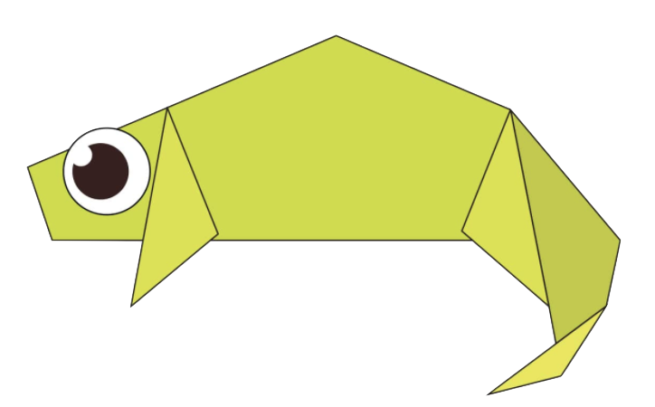

Origami Designs
Chameleon

Interesting Facts about Chameleons
- Chameleons are reptiles that are a part of the iguana suborder
- Changing skin colour is an part of communicaton among them
- Most Chameleons have a prehensile tail that they use to wrap around the tree branches
Pigeon

Interesting Facts about Pigeons
- Pigeons are really complex and intelligent animals
- They are renowned for their their outstanding navigational abilities
- Pigeons have excellent hearing abilities
Camel

Interesting Facts about Camels
- There are two types of camels: One humped dromedary camels and two humped Bactrian camels
- Camels have three sets of eyelids and two rows of eyelashes to keep sand out of their eyes
- Camels have thick lips which let them forage for thorny plants other animals can't eat
About Us
Follow us